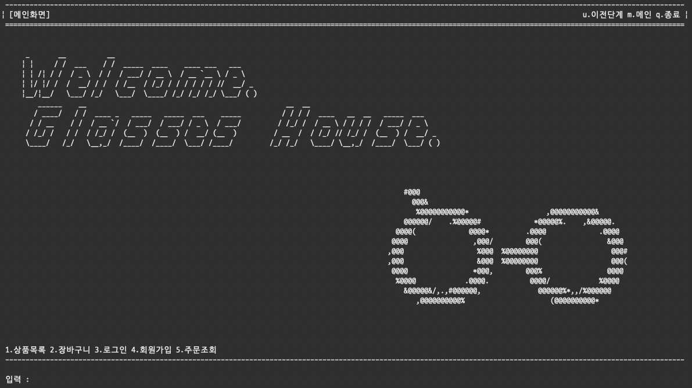
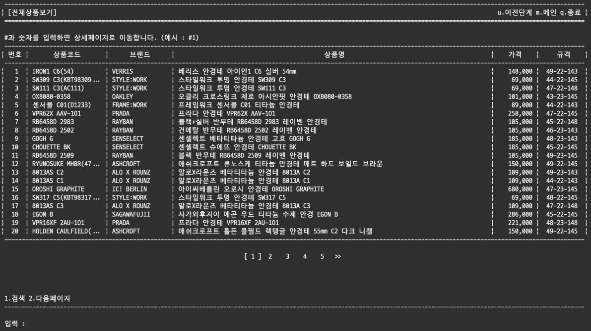

안경집

개발배경
인터넷으로 안경을 주문한 적이 있는데 물건을 받아보니 안경 다리가 생각보다 짧아 결국 반품을 한 적이 있습니다. 한번 실패를 경험한 후에야 모든 안경의 다리 안쪽에 렌즈직경, 브릿지길이, 다리길이가 표기되어 있다는 걸 알았습니다.
그런데 보통 치수 정보는 상품 상세 페이지에서나 볼 수 있어 이를 확인하려면 일일이 상세 페이지에 들어가야 하는 번거로움이 있었습니다. 이에 기존 안경 쇼핑몰에 안경치수의 조건범위를 정해 검색할 수 있는 기능을 추가하여 제작하게 되었습니다.
프로젝트 개요
- 목적 : 안경의 치수정보 제공 및 검색이 가능한 쇼핑몰 제작
- 개발환경 : macOS Catalina, Window 10, Eclipse
- 주요사용기술
- Java : 파일입출력, 오버로딩, 오버라이딩, 컬렉션, 스트림
- 개발인원 : 6인
- 주요기능
- 상품조회(전체, 카테고리별)
- 상품검색(안경 치수, 키워드, 카테고리)
- 회원가입 및 로그인
- 상품주문 및 결제
- 상품, 주문 관리를 위한 관리자페이지
- 기여파트
- 안경 데이터 확보
- 클래스 구조 설계
- 프로젝트 베이스 코드 구성
- 회원가입, 검색, 주문조회, 주문상세 구현
- 코드 검토 및 병합
개발포인트
1. 스택 오버 플로우를 방지하는 베이스 코드를 작성했습니다.
콘솔 기반으로 프로그램을 개발하면 특정 화면을 출력하기 위해 메서드를 호출하게 됩니다.
private static void itemListScreen() {
//사용자의 오입력 이후에도 입력을 받기 위한 while문 루프
//하위 화면에서 이동 셀렉터가 q(종료), m(메인화면)일 때 현재 화면을 스킵하고
//스택을 해소하기 위한 조건문
while(!(sel.equalsIgnoreCase("q" || sel.equalsIgnoreCase("m"))) {
//화면을 나타내기 위한 view 메서드
titleView("상품목록");
topMessageView("");
logoView();
fixNewLineView();
selectView("1. 전체상품보기 2.카테고리선택 3.통합검색");
sel = getInput();
//이동 셀렉터의 입력값에 따라 하위 화면으로 이동
if (sel.equalsIgnoreCase("1")) {
totalListScree();
} else if (sel.equalsIgnoreCase("2")) {
categorySelectScreen();
} else if (sel.equalsIgnoreCase("3")) {
itemSearchScreen();
//루프탈출, 상위 화면으로 이동
} else if (sel.equalsIgnoreCase("u") //이전단계
|| sel.equalsIgnoreCase("q") //종료
|| sel.equalsIgnoreCase("m") { //메인화면
return;
//오입력 시 에러메세지 출력
} else {
pause("잘못된 입력입니다.");
}
}
}
이 때, 다른 화면으로 이동할 때마다 단순히 메서드를 호출하는 형태로 구조를 짜게 되면 계속해서 메서드 스택이 쌓일 수 밖에 없게 됩니다. 따라서 메서드 스택이 무한히 쌓이지 않고 페이지의 트리 구조에 따라서만 쌓일 수 있도록 베이스 코드를 구성하였습니다.
2. 통일된 UI를 위해 view 메서드를 작성하여 제공했습니다.
편안한 사용자 경험을 제공하기 위해서는 비록 콘솔 화면일지라도 통일된 UI를 제공할 필요가 있다고 생각했습니다. 이를 위해 16:9비율로 레이아웃을 정하고 내부 UI 작업을 시작했습니다.
UI를 배치할 때는 같은 성격의 요소가 항상 같은 위치에 출력되어야 한다는 것을 가장 기본으로 생각하고 작업했습니다.
콘솔 프로젝트인 만큼 사용자에게 선택지를 보여주고, 사용자가 입력한 선택지에 따라 작동하는데 이 때 화면에 따라 다르게 기능하는 선택지(1, 2, 3...)와 모든 화면에서 똑같이 기능하는 선택지 (u, m, q) 두가지로 나뉘게 됩니다.
먼저 이 둘을 명확히 분리해야 한다고 생각했습니다. 따라서 u, m, q는 우측 상단에 고정하고, 화면 내 선택지는 입력창 바로 위에 위치시켜 이용자가 바로 보고 입력할 수 있도록 했습니다.

또 상품을 조회할 때 목록 형태를 많이 보게 되는데 한페이지에 20개로 개수를 정하고 아래에 페이지를 나타내도록 했습니다.
이 때 문제가 되었던 것이 폰트였습니다. 제가 사용하는 D2 Coding 폰트는 한글 1자가 영문 2자만큼의 넓이를 가지고 있는데 String.format의 문자 자리수는 이것을 고려하지 않고 한/영 다 1칸으로 처리해 통일된 화면이 나오지 않았습니다.
public static String fixLeftString(String s, int space) {
StringBuilder sb = new StringBuilder();
int count = 0;
for (int i = 0; i < s.length(); ++i) {
if (space - count > 3) {
if ((s.charAt(i) >= '가' && s.charAt(i) <= '힣')
|| (s.charAt(i) >= 'ㄱ' && s.charAt(i) <= 'ㅣ')) {
count += 2;
sb.append(s.charAt(i));
} else {
count += 1;
sb.append(s.charAt(i));
}
} else {
for (int j = 0; j <= space - count + 1; ++j) {
sb.append(".");
count++;
}
break;
}
}
if (space - count > 0) {
for (int i = 0; i < space - count; ++i) {
sb.append(" ");
}
}
return sb.toString();
}
그래서 이것을 대체하기 위해 fixLeftString, fixCenterString, fixRightString이라는 메서드를 만들어 간격을 통일시켰습니다. 추가로 만약 간격보다 긴 텍스트가 들어갈 경우에는 넘치는 부분을 자르고 ...으로 출력하도록 메서드를 구현했습니다.
3. 스트림과 람다를 활용하여 검색 알고리즘을 구현했습니다.
private static ArrayList- getSearchResult(SearchCondition condition) {
ArrayList
- items = new ArrayList
- ();
ArrayList shapes = condition.getShapes().length() == 0
? new ArrayList()
: new ArrayList(Arrays.asList(condition.getShapes().split(", ")));
ArrayList materials = condition.getMaterials().length() == 0
? new ArrayList()
: new ArrayList(Arrays.asList(condition.getMaterials().split(", ")));
ArrayList brands = condition.getBrands().length() == 0
? new ArrayList()
: new ArrayList(Arrays.asList(condition.getBrands().split(", ")));
int[] prices = condition.getPrices();
int[][] sizes = new int[2][3];
String word = condition.getWord().trim();
String[] words = word.length() == 0 ? null : word.split(" ");
for (int i = 0; i < 2; ++i) {
String[] temp = condition.getSizes()[i].split("-");
sizes[i] = Arrays.stream(temp).mapToInt(s -> Integer.parseInt(s)).toArray();
}
ArrayList
- temp = new ArrayList
- ();
itemRepository.stream().filter(item -> shapes.isEmpty()
? true
: shapes.contains(item.getShape().getString())
)
.filter(item -> brands.isEmpty()
? true
: brands.contains(item.getBrand())
)
.filter(item -> itemTagRepository
.get(item.getCode()).getPrice() >= prices[0]
&& itemTagRepository
.get(item.getCode()).getPrice() <= prices[1])
.forEach(item -> temp.add(item));
loopOut:
for (Item item : temp) {
if (itemTagRepository.get(item.getCode()).getPrice() < prices[0]
&& itemTagRepository.get(item.getCode()).getPrice() > prices[1]) {
continue;
}
int[] itemSize = Arrays.stream(item.getSize().split("-"))
.mapToInt(s -> Integer.parseInt(s)).toArray();
if (itemSize[0] < sizes[0][0] && itemSize[0] > sizes[1][0]
&& itemSize[1] < sizes[0][1] && itemSize[1] > sizes[1][1]
&& itemSize[2] < sizes[0][2] && itemSize[2] > sizes[1][2]) {
continue;
}
for (Material material : item.getMaterial()) {
if (!(materials.isEmpty()
)) {
continue;
} else if (!(materials.contains(material.getString())
)) {
continue;
}
}
if (words != null) {
int count = 0;
for (String s : words) {
if (!item.getName().contains(s)
&& !s.contains(item.getShape().getString())
&& !s.contains(item.getBrand())) {
continue;
}
count++;
}
if (count != words.length) {
continue loopOut;
}
}
items.add(item);
}
return items;
}